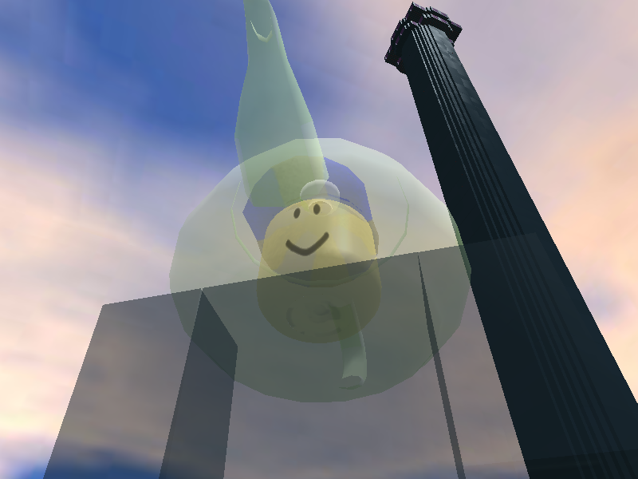

Welcome to winsupermario1234's Website
This website primarily lists Win's 24/7 Novetus servers. It is based on the RBXLegacy website with all PHP and deprecated HTML removed and replaced with static HTML and CSS styling. You may have also stumbled upon this domain from viewing an asset hosted on this web server. One such asset is below.
